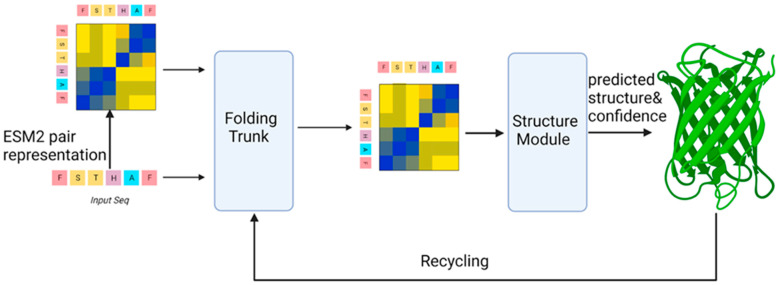
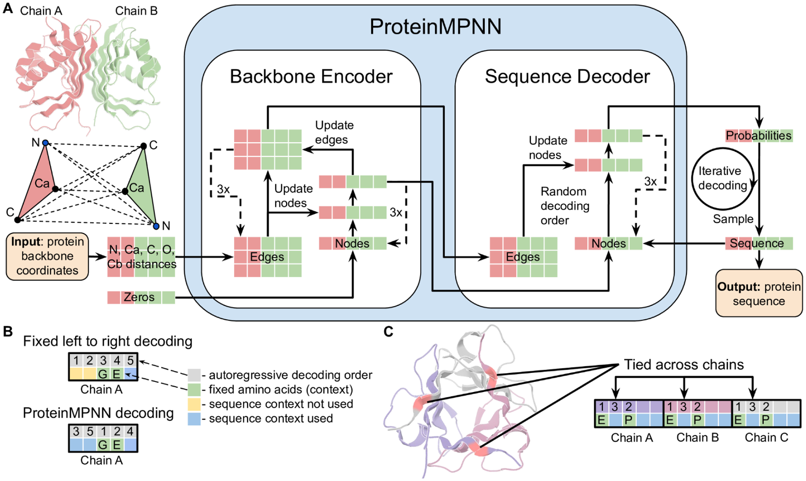
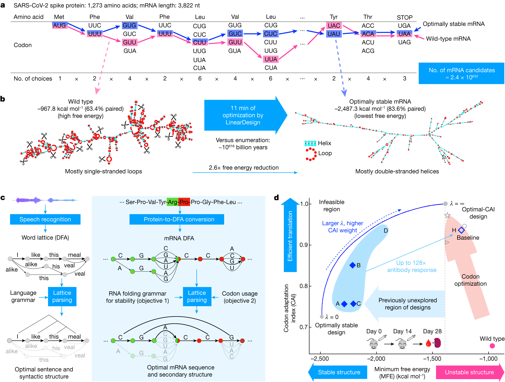
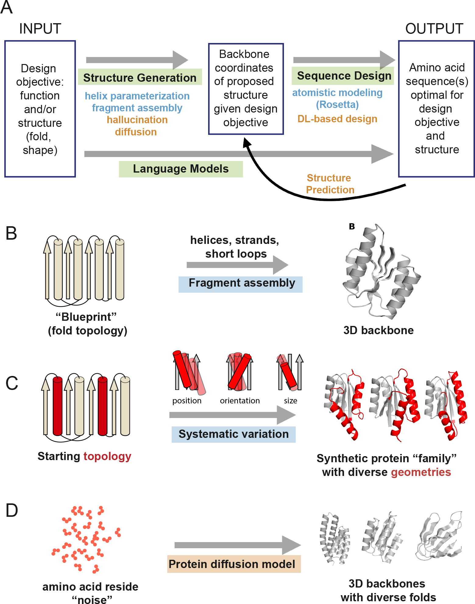

仅需 165 美元，跨越 25 个物种训练 mRNA 语言模型
文章背景与核心概要
本文介绍了医疗与生命科学开源智能体 AI 团队 OpenMed 开发的端到端蛋白质 AI 流水线。该流水线创新性地整合了结构预测（ESMFold）、序列设计（ProteinMPNN）与密码子优化（CodonRoBERTa）三大核心阶段，实现了从蛋白质骨架到高效 mRNA 序列的完整闭环。
在技术实现上，团队通过对多种 Transformer 架构进行深入探索，成功锁定 CodonRoBERTa-large-v2 作为密码子级语言建模的最优模型，其困惑度（Perplexity）低至 4.10，且与密码子适应指数（CAI）的 Spearman 相关系数达到 0.40。项目最终将这一方案成功扩展至包含细菌、酵母和哺乳动物等在内的 25 个物种，仅耗费 55 个 GPU 小时、总成本约 165 美元便训练出了一套可用于生产的强大模型矩阵。该成果为开源生物计算领域提供了一种高性价比、高灵活性的端到端解决方案。
By OpenMed, Open-Source Agentic AI for Healthcare & Life Sciences
By OpenMed, Open-Source Agentic AI for Healthcare & Life Sciences
Summary
OpenMed has developed an end-to-end protein AI pipeline that integrates structure prediction, sequence design, and codon optimization. By conducting an extensive architectural exploration, the team identified CodonRoBERTa-large-v2 as the optimal model for codon-level language modeling, achieving a perplexity of 4.10 and a 0.40 Spearman correlation with the Codon Adaptation Index (CAI). The project successfully scaled to 25 species, training a production-ready suite of models in just 55 GPU-hours for a total cost of approximately $165.
Summary
OpenMed has developed an end-to-end protein AI pipeline that integrates structure prediction, sequence design, and codon optimization. By conducting an extensive architectural exploration, the team identified CodonRoBERTa-large-v2 as the optimal model for codon-level language modeling, achieving a perplexity of 4.10 and a 0.40 Spearman correlation with the Codon Adaptation Index (CAI). The project successfully scaled to 25 species, training a production-ready suite of models in just 55 GPU-hours for a total cost of approximately $165.
1. What We Built
该流水线解决了蛋白质工程中的三个关键阶段： * 蛋白质折叠： 使用 ESMFold 预测 3D 结构。 * 序列设计： 使用 ProteinMPNN 为特定骨架生成氨基酸序列。 * mRNA 优化： 使用定制的 Transformer 模型为特定的表达宿主优化 DNA 序列。
1. What We Built
The pipeline addresses the three critical stages of protein engineering: * Protein Folding: Using ESMFold to predict 3D structures. * Sequence Design: Using ProteinMPNN to generate amino acid sequences for specific scaffolds. * mRNA Optimization: Using custom transformer models to optimize DNA sequences for specific expression hosts.
| 组件 | 我们的工作 | 关键结果 |
|---|---|---|
| 蛋白质折叠 | 在 30 条链上运行 ESMFold v1 | 平均 PTM：0.79 |
| 序列设计 | 在 7K00 骨架上运行 ProteinMPNN | 42% 的序列恢复率 |
| mRNA 优化 | 跨 25 个物种在 38.1k 条序列上进行训练 | CodonRoBERTa-large-v2（困惑度 4.10） |
Component What We Did Key Result Protein Folding ESMFold v1 on 30 chains Avg PTM: 0.79 Sequence Design ProteinMPNN on scaffold 7K00 42% sequence recovery mRNA Optimization Trained on 381k sequences across 25 species CodonRoBERTa-large-v2 (Perplexity 4.10)
2. The Architecture Exploration
我们对比了几种 Transformer 架构，以确定哪种架构能最好地捕捉密码子序列的统计特性。
2. The Architecture Exploration
We compared several transformer architectures to determine which best captures the statistical properties of codon sequences.
候选模型
- CodonBERT（基线）： 600 万参数。
- ModernBERT-base： 9000 万参数（采用 RoPE 的现代化架构）。
- CodonRoBERTa（Base/Large/v2）： 9200 万至 3.12 亿参数（经验证的主力模型）。
The Contenders
- CodonBERT (Baseline): 6M parameters.
- ModernBERT-base: 90M parameters (Modern architecture with RoPE).
- CodonRoBERTa (Base/Large/v2): 92M–312M parameters (Proven workhorse).
结果
RoBERTa 系列的表现显著优于 ModernBERT。我们发现，超参数调优（具体而言是更低的学习率和更长的预热期）是实现生物学相关性（通过 CAI 相关性衡量）的决定性因素。
The Results
The RoBERTa family significantly outperformed ModernBERT. We discovered that hyperparameter tuning (specifically lower learning rates and longer warmups) was the deciding factor in achieving biological relevance, as measured by CAI correlation.
| 模型 | 困惑度 (Perplexity) | CAI Spearman 相关系数 | 状态 |
|---|---|---|---|
| CodonRoBERTa-large-v2 | 4.10 | 0.404 | 整体最优 |
| CodonRoBERTa-base | 4.01 | 0.219 | 效率最高 |
| ModernBERT-base | 26.24 | 0.070 | 表现不佳 |
Model Perplexity CAI Spearman Status CodonRoBERTa-large-v2 4.10 0.404 Best Overall CodonRoBERTa-base 4.01 0.219 Best Efficiency ModernBERT-base 26.24 0.070 Underperformed
3. The Pipeline
3.1 使用 ESMFold 进行蛋白质折叠

ESMFold 能够实现快速结构预测，而无需进行耗时的多序列比对（MSA）。我们在 30 条蛋白质链上进行的测试得出了 0.79 的平均 PTM，证实了其具有很高的拓扑置信度。3. The Pipeline
3.1 Protein Folding with ESMFold
ESMFold allows for rapid structure prediction without the need for time-consuming Multiple Sequence Alignments (MSA). Our tests on 30 protein chains yielded an average PTM of 0.79, confirming high topological confidence.
3.2 使用 ProteinMPNN 进行序列设计

ProteinMPNN 将蛋白质骨架视为图结构。通过在 7K00 骨架上运行它，我们实现了约 42% 的序列恢复率，展示了该模型重新发现进化选择残基的能力。3.2 Sequence Design with ProteinMPNN
ProteinMPNN treats the protein backbone as a graph. By running this on scaffold 7K00, we achieved ~42% sequence recovery, demonstrating the model's ability to rediscover evolutionarily selected residues.
3.3 mRNA 优化

我们将密码子优化重新构想为掩码语言建模（MLM）任务。通过在 25 万条 CDS 序列上进行训练，我们的模型学会了密码子的“语法”，捕捉到了传统频率表所忽略的长程依赖关系。3.3 mRNA Optimization
We reframed codon optimization as a masked language modeling (MLM) task. By training on 250k CDS sequences, our models learn the "grammar" of codon usage, capturing long-range dependencies that traditional frequency tables miss.
4. Scaling to Multi-Species
我们将系统扩展到了涵盖细菌、酵母和哺乳动物在内的 25 种生物。我们引入了 94 词元的词表（69 个基础词元 + 25 个物种词元），以实现条件物种生成（species-conditioned generation）。
4. Scaling to Multi-Species
We expanded our system to cover 25 organisms, including bacteria, yeast, and mammals. We introduced a 94-token vocabulary (69 base tokens + 25 species tokens) to allow for species-conditioned generation.
模型矩阵
- 通用基础模型：
OpenMed/CodonRoBERTa-large-multispecies - 人类专用模型：
OpenMed/CodonRoBERTa-large-human（最适合 mRNA 治疗药物） - 大肠杆菌专用模型：
OpenMed/CodonRoBERTa-large-ecoli - CHO 细胞专用模型：
OpenMed/CodonRoBERTa-large-cho
The Model Suite
- Universal Base:
OpenMed/CodonRoBERTa-large-multispecies- Human Specialist:
OpenMed/CodonRoBERTa-large-human(Best for mRNA therapeutics)- E. coli Specialist:
OpenMed/CodonRoBERTa-large-ecoli- CHO Specialist:
OpenMed/CodonRoBERTa-large-cho
5. The End-to-End Workflow

该工作流遵循清晰的循环： 1. 折叠： 使用 ESMFold 预测结构。 2. 设计： 使用 ProteinMPNN 生成序列。 3. 验证： 重新折叠候选序列以确保稳定性。 4. 优化： 使用 CodonRoBERTa 选择密码子。 5. 合成： 进入实验室测试阶段。5. The End-to-End Workflow
The workflow follows a clear cycle: 1. Fold: Predict structure with ESMFold. 2. Design: Generate sequences with ProteinMPNN. 3. Verify: Refold candidates to ensure stability. 4. Optimize: Select codons with CodonRoBERTa. 5. Synthesize: Proceed to lab testing.
6. Where This Stands and What's Next
尽管 mRNABERT 和 NUWA 等模型在规模大得多的数据集上进行训练，但 OpenMed 提供了一个完全开源、支持物种条件的流水线，它具有更高的参数效率和灵活性。
6. Where This Stands and What's Next
While models like mRNABERT and NUWA train on significantly larger datasets, OpenMed provides a fully open-source, species-conditioned pipeline that is more parameter-efficient and flexible.
未来研究方向： * CodonJEPA： 一种使用联合嵌入预测架构（Joint Embedding Predictive Architecture）的新方法，用于学习同义密码子在功能上是等效的。 * 规模扩展： 在更大的数据集（3600 万+ 序列）上进行重新训练，并添加 mRNA 稳定性预测头。
Future Research: * CodonJEPA: A new approach using Joint Embedding Predictive Architecture to learn that synonymous codons are functionally equivalent. * Scaling: Retraining on larger datasets (36M+ sequences) and adding mRNA stability prediction heads.
7. References
- Jumper, J. et al. (2021). "Highly accurate protein structure prediction with AlphaFold." Nature.
- Dauparas, J. et al. (2022). "Robust deep learning-based protein sequence design using ProteinMPNN." Science.
- Xiong, Y. et al. (2025). "mRNABERT: advancing mRNA sequence design with a universal language model." Nature Communications.
7. References
- Jumper, J. et al. (2021). "Highly accurate protein structure prediction with AlphaFold." Nature.
- Dauparas, J. et al. (2022). "Robust deep learning-based protein sequence design using ProteinMPNN." Science.
- Xiong, Y. et al. (2025). "mRNABERT: advancing mRNA sequence design with a universal language model." Nature Communications.
所有模型和数据集均可通过 OpenMed Hugging Face 组织 获取。
All models and datasets are available via the OpenMed Hugging Face organization.